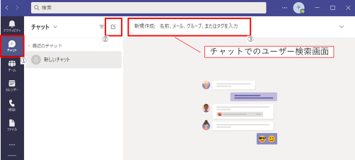
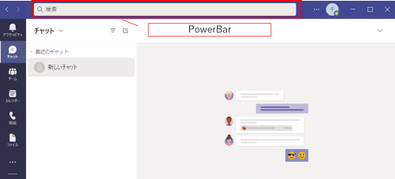

こんにちは。Unified Communications サポート チームです。
いつも Microsoft Teams をご利用いただきありがとうございます。
Exchange Server/Online 側にて msExchHideFromAddressLists を True (アドレス帳に表示しないをオン) にした場合、Teams 上でのユーザー検索へ影響が発生します。
ただし、Teams は検索を行う場所により動作が異なりますので、注意が必要となります。
1. 検索箇所について
Teams でのユーザー検索は、大きく以下の 2 つがあります。
- [チャット] ＞ [新しいチャット] を選択し、ユーザー検索をする場合
 - Teams 上部にある PowerBar でユーザーを検索する場合

2. それぞれの影響について
以下のように、検索箇所で動作が異なりますので、ご注意ください。
[チャット] ＞ [新しいチャット] を選択し、ユーザー検索をする場合
基本的には影響はなく、ユーザーを検索することが可能です。
ただし、Exchange アドレス帳ポリシーを使用したディレクトリ検索の範囲指定 の設定をオンにしている場合は、ユーザー検索が出来なくなる場合があります。Teams 上部にある PowerBar でユーザーを検索する場合
msExchHideFromAddressLists を True (アドレス帳に表示しないをオン) にしたユーザーは検索出来なくなります。
今回は、msExchHideFromAddressLists を True (アドレス帳に表示しないをオン) にした場合の Teams への影響についてご案内いたしました。
設定による動作の違いに注意いただき、Teams ライフをお楽しみください。
※本情報の内容（添付文書、リンク先などを含む）は、作成日時点でのものであり、予告なく変更される場合があります。